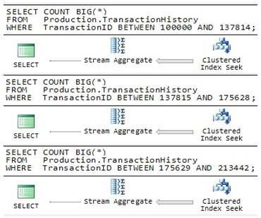
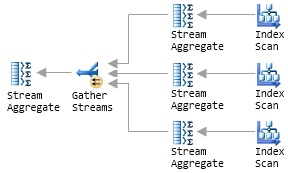
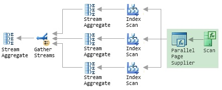
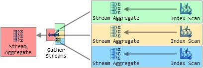
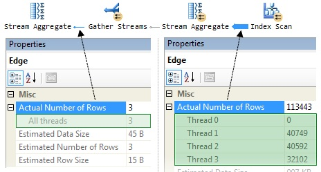
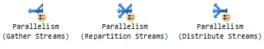
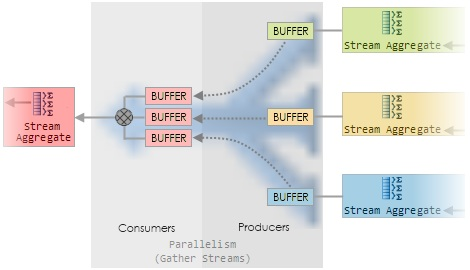
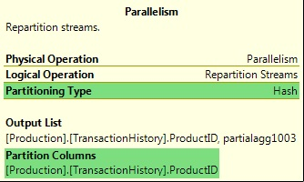
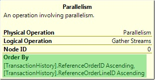

Обработка запросов - это процесс, посредством которого система управления базами данных (СУБД) анализирует, проверяет и оптимизирует заданный запрос перед созданием низкоуровневого кода, понятного БД.
Обработка запросов в СУБД, как и в любом другом языке высокого уровня (ЯВУ), где код сначала генерируется, а затем выполняется для выполнения различных операций, имеет две фазы: время компиляции и время выполнения.
Использование декларативных языков и оптимизация запросов является одним из основных факторов, способствующих успеху технологии СУБД. Любая база данных позволяет пользователям создавать запросы для запроса определенных данных, а затем база данных использует эффективные методы для поиска запрошенных данных.
Задача оптимизатора запросов - оценить все возможные способы выполнения запроса и выбрать наиболее эффективный. Это делается в процессе оптимизации.
Разработка передовых систем баз данных совпала с заметными достижениями в области обработки данных и технологий распределенных вычислений. Параллельные системы баз данных появились в результате добавления следующих двух функций.
Методы управления данными и параллельной обработки объединены в параллельных системах баз данных, чтобы обеспечить масштабируемость, высокую производительность и высокую доступность для приложений, интенсивно использующих данные.
Параллельная обработка запросов в системах баз данных была предметом многочисленных исследований за последние два десятилетия. Его вывод, несомненно, в настоящее время используется в качестве компонента важных коммерческих СУБД. Архитектуры без общего доступа (SN) были в центре внимания большинства исследований, таких как исследовательские прототипы Gamma и Bubba.
Он отлично подходит для текущих распределенных и кластерных вычислений и служит координационным центром для различных стратегий симметричных многопроцессорных архитектур (SMP), таких как XPRS и Volcano.
Подход к оптимизации базы данных, основанный на CMP, изучался многими другими учеными. Но большая часть их усилий была направлена на оптимизацию операций соединения с учетом L2-кэша и параллельных буферов общей основной памяти.
Разделяя вопрос на части, которые могут выполняться параллельно, параллелизм в запросе позволяет параллельно выполнять многочисленные запросы. Архитектура без общего доступа может помочь в этом.
С появлением все большего количества ресурсов, таких как процессоры и диски, параллелизм также используется для ускорения процесса выполнения запросов.
Подсчитаем количество строк в таблице SQL Server. Если таблица небольшая, SQL Server, скорее всего, будет использовать план выполнения, как показано на рисунке 4.
Рисунок 4. Последовательный план подсчета (Serial Counting Plan)
Сам план очень прост: оператор “Stream Aggregate” подсчитывает строки, которые он получает от оператора “Index Scan” и возвращает результат как только все строки были обработаны.
С другой стороны, если таблица является достаточно большой, оптимизатор SQL Server может выбрать дополнительных работников, используя план запроса, как показано на рисунке 5.
Рисунок 5. Параллельный план подсчета (Parallel Counting Plan)
Маленькие желтые значки со стрелками показывают операции, которые включают несколько работников. Каждому работнику назначается отдельная часть работы, и частичные результаты затем объединяют с получением конечного результата. Как показано в примере ручного подсчета, параллельный план может завершиться значительно быстрее, чем последовательный план, потому что несколько работников будут активно подсчитывать строки одновременно.
Представим, что SQL Server не имеет встроенную поддержку параллелизма. Можно попытаться повысить производительность оригинального запроса подсчета строк, вручную разбив запрос на одинаковые по размеру кусочки и запустив каждый из них одновременно на отдельном подключении к серверу.

Рисунок 6. Ручной параллелизм (Manual Parallelism)
Каждый запрос на рисунке 6 написан для обработки отдельного диапазона строк таблицы, гарантируя, что каждая строка из таблицы обрабатывается только один раз в целом. Если SQL Server запустит каждый запрос на отдельном блоке обработки, можно рассчитывать на получение трех частичных результатов примерно в треть времени. Естественно, все равно потребуется выполнить дополнительную стадию объединения результатов, чтобы получить правильный конечный результат.
Пример «Ручного параллелизма» не столь далек от того, как SQL Server фактически осуществляет свою параллельную работу с запросами. Предположим, что SQL Server выделяет три дополнительных работника на запрос во время его выполнения. Концептуально, можно перерисовать параллельный план, чтобы показать, что SQL Server запускает три последовательных плана одновременно .

Рисунок 7. Множество последовательных планов (Multiple Serial Plans)
Каждому дополнительному работнику присваивается один из трех ветвей плана, которые сливаются в оператор Сбора Потоков (Gather Streams operator). Только оператор Сбора Потоков (Gather Streams operator) содержит маленькую желтую иконку параллелизма; это сейчас единственный оператор, который взаимодействует с несколькими работниками. Эта общая стратегия подходит SQL Server по двум основным причинам. Во-первых, весь код, который SQL Server необходимо выполнить для реализации последовательных планов уже существует и был оптимизирован в течение многих лет и релизации продукта. Во-вторых, этот метод очень хорошо масштабируется: если больше работников доступно во время выполнения, SQL Server может легко добавить дополнительные ветви плана чтобы распределить работу на большее количество работников.
Количество дополнительных работников, которых SQL Server присваивает каждой области параллельного плана во время выполнения известно как степень параллелизма (Degree of parallelism - часто сокращенно DOP). SQL-сервер выбирает DOP непосредственно перед началом выполнение запроса, и это значение может меняться между выполнениями запроса без необходимости повторной компиляции плана. Максимальная DOP для каждой параллельной области определяется количеством логических блоков обработки (logical processing units) видимых SQL Server.
Проблемой в концептуальном плане, показанном на рисунке 7, является то, что каждый оператор Index Scan будет считать каждую строку во всей совокупности ввода. Левая часть некорректна, план будет выдавать неправильные результаты и займет больше времени для выполнения, чем последовательная версия. Ручной пример параллелизма избежал этой проблемы, используя явное «ГДЕ» (“WHERE”) в каждом запросе и разделил входные строки на три одинаковых по размеру диапазона.
SQL Server не использует тот же подход, потому что, распределяя работу равномерно, можно предположить, что каждый запрос будет получать равную долю доступных вычислительных ресурсов, и что каждая строка данных потребует одинаковое усилие для обработки. В качестве простого примера, такого как подсчет строк в таблице (на сервере без другой деятельности) эти предположения вполне могут иметь место и три запроса могут действительно вернуть свои частичные результаты примерно за то же время.
В целом, однако, можно легко привести примеры, где эти предположения не будут допускаться в реальном мире, в связи с некоторым числом внешних или внутренних факторов. Например, один из запросов может быть запланирован на тот же логический процессор, который занят продолжительной массовой загрузкой, в то время как другие остаются без нагрузки. В качестве альтернативы рассмотрим запрос, который включает в себя операцию соединения (Join), где объем работ, необходимых для обработки конкретной строки сильно зависит от того, соответствует ли она условию соединения или нет. Если некоторые запросы содержат больше соединяющих строк, чем другие, то время выполнения может варьироваться в широких пределах и общая производительность будет ограничена скоростью самого медленного работника.
Вместо того чтобы выделять фиксированное количество строк для каждого работника, SQL Server использует функцию хранения под названием поставщик параллельных страниц (Parallel Page Supplier) для распределения строк среди работников по требованию. Вы не увидите Parallel Page Supplierв графическом плане запроса, потому что он не является частью процессора запросов, но мы можем продлить иллюстрацию рисунка 8, чтобы показать, где он будет находиться и его связи:

Рисунок 8. Поставщик параллельных страниц (Parallel Page Supplier)
Важным моментом является то, что это схема на основе спроса; Parallel Page Supplier отвечает на запросы работников, обеспечивая партию строк любому работнику, который должен еще поработать. Возвращаясь к аналогии подсчета, Parallel Page Supplier представлен совком, используемым для извлечения данных. Один общий совок гарантирует, что нет двух людей, подсчитывающих те же данные, с другой стороны, нет ничего, что может препятствовать человеку забирать больше данных для подсчета по мере необходимости. В частности, если один человек работает медленнее, чем другие, то этот человек просто реже пользуется совком, и другие работники будут подсчитывать больше данных, чтобы компенсировать это.
В SQL Server медленный работник делает меньше запросов к Parallel Page Supplier и таким образом обрабатывает меньше строк. Это не влияет на работу других работников, и они продолжают обработку строк в их максимальной производительности. Таким образом, схема на основе спроса обеспечивает определенную степень устойчивости к изменениям в рабочей пропускной способности. Вместо того чтобы быть связанным по скорости самого медленного работника, производительность схемы на основе спроса уменьшается незначительно, если у отдельного работника снижается производительность. Тем не менее, тот факт, что каждый работник может обрабатывать значительно отличающиеся количества строк, в зависимости от условий среды выполнения, может вызвать другие проблемы.
Использование Parallel Page Supplier не мешает SQL Server использовать существующие оптимизации, такие как сканирование опережающего чтения (read-ahead scanning) (предварительную выборку данных из постоянного хранения). На самом деле, это может быть даже немного более эффективным для трех работников потребляющих строки из одного, базового физического сканирования, а не из трех отдельных сканов областей, которые мы видели в ручном примере параллелизма.
Parallel Page Supplier также не ограничивается использованием сканирования индексов; SQL Server использует Parallel Page Supplier всякий раз, когда несколько работников совместно читают структуру данных. Эта структура данных может быть массив, кластерная таблица или индекс, и операция может быть либо сканирования (scan) либо поиска (seek). Если последний пункт удивляет вас, считают, что Index Seek лишь частичное сканирование (scan) т.е. она стремится найти первую отобранную (qualifying) строку, а затем сканирует до конца отобранного диапазона.
Обратимся теперь к отдельным серверным соединениям, используемым в ручном примере параллелизма для достижения одновременного выполнения. Это не было бы эффективным для SQL Server, фактически создать несколько новых соединений для выполнения каждого параллельного запроса, но реальный механизм во многом похож. Вместо того, чтобы создавать отдельное соединение для каждого последовательного запроса, SQL Server использует облегченную конструкцию, известную как контексты исполнения (Execution Contexts).
Контекст выполнения происходит от части плана запроса, во время выполнения, заполняя детали, которые не были известны в то время, когда план был скомпилирован и оптимизирован. Эти детали включают ссылки на объекты, которые не существуют до момента выполнения (временная таблица, созданная в рамках одного пакета, например) и значения любых параметров и локальных переменных. Более подробная информация о контекстах - Microsoft White Page.
SQL Server запускает параллельный план, выводя контексты выполнения DOP для каждой параллельной области плана запроса, с использованием отдельного работника для запуска части последовательного плана содержащегося в каждом контексте. Для облегчения понимания концепции, на рисунке 9 показаны четыре контекста выполнения созданных для параллельного плана подсчета, над которым мы работали до сих пор. Каждый цвет определяет область контекста исполнения, и хотя это не показано явно, Parallel Page Supplier снова используется для координации индексов.

Рисунок 9. Контексты выполнения параллельного плана
Самый левый контекст выполнения плана параллельного запроса (отображается красным цветом, на рисунке 9) играет особую координирующую роль и выполняется работником подключения, отправившего запрос. Это "первый" контекст выполнения известен как нулевой контекст выполнения, и связанный работник известен как нулевой поток (thread zero). Мы определим некоторые из этих терминов более точно в следующем разделе, а пока предположим, что «работник» и «поток» (thread) означает примерно то же самое.
Чтобы получить более конкретное представление абстрактных понятий, рисунок 10 показывает информацию, полученную путем запуска параллельного запроса подсчета строк, с помощью опции SQL Server Management Studio (SSMS), «Include Actual Execution Plan».

Рисунок 10. Параллельный план подсчета строк
Выноски показывают количество строк, обработанных каждым работником (потоком) в двух различных точках в плане. Информация поступила из окна SSMS Properties, которое может быть доступно при нажатии на оператора (или соединительной линии) и клавиши F4. Кроме того, вы можете щелкнуть правой кнопкой мыши на операторе или линии и выбрать «Свойства» («Properties») из всплывающего меню.
Читая справа, видно сколько строк рассчитывает каждый из трех работников в параллельной части плана; два работника обрабатывают приблизительно равное количество строк (около 40 000), а третий получает всего 32 000 строк из Parallel Page Supplier. Как уже говорилось ранее, процесс основанный на спросе означает, что точное число строк, обработанных каждым работником зависит от временных показателей и загрузки процессоров (в числе прочего) и часто колеблется между выполнениями запросов, даже на легкозагруженой машине.
Левая часть диаграммы показывает три частичных результата (по одному от каждого параллельного работника, выполняется в своем собственном контексте исполнения), которые собираются вместе и подвел их к одному результату 'thread zero'.
Планировщик в SQL Server представляет собой логический процессор, который может быть физическим процессором, ядром процессора, или, возможно, одним из нескольких аппаратных потоков, работающих в пределах ядра (Hyper Threading). Основная цель планировщиков заключается в том, чтобы позволить SQL Server точно управлять собственным планированием потоков, а не полагаться на общие алгоритмы, используемых в операционных системах Windows. Каждый планировщик гарантирует, что только один совместно выполняющийся поток является работоспособным (насколько позволяет операционная система) в любой момент, который может иметь важные преимущества, такие как снижение переключения контекста, и снижение числа вызовов в ядре Windows. Часть третья этой серии охватывает внутреннее планирование задач и их исполнение более подробно.
Информация о планировщиках показана в просмотре системы динамического управления (DMV), sys.dm_os_schedulers.
Работник SQL Server является абстракцией, что представляет собой либо один поток операционной системы или набор потоков (fiber) (в зависимости от настройки конфигурации “lightweight pooling”). Очень немногие системы работают с включенным режимом “fiber-mode scheduling”, таким образом многие тексты (в том числе большая часть официальной документации) ссылаются на "рабочие потоки" (worker threads) - подчеркивая тот факт, что, для большинства практических целей, работник является потоком. Работник (поток) привязан к конкретному планировщику для всего срока службы. Информация о работниках показана в sys.dm_os_workersDMV.
Задача представляет собой единицу работы, которая планируется на SQL Server. Работа может быть связана с одной или несколькими задачами. Например, параллельный запрос будет выполнять несколько задач.
Если задача описывает работу, которую предстоит сделать, то контекст выполнения описывает где эта работа будет происходить. Каждая задача выполняется внутри одного контекста исполнения, которые были определены в колонке exec_context_id в sys.dm_os_tasksDMV(вы также можете увидеть контексты выполнения с помощью “ECID” колонки в просмотре обратной совместимости sys.sysprocesses).
Чтобы кратко резюмировать, мы видели, что SQL Server выполняет параллельный план путем совместного запуска нескольких экземпляров последовательного плана. Каждый последовательный план является одной задачей, выполняемой в отдельном рабочем потоке внутри собственного контекста выполнения. Последний ингредиент в параллельном плане оператор обмена, который является 'клеем' для SQL Serverи используется для соединения контекстов исполнения параллельного плана. В целом, комплексный план запроса может содержать любое количество последовательных или параллельных областей, соединенных операторами обмена.
До сих пор мы видели только один вариант оператора обмена, а именно «Gather streams», но оператор обмена может появиться в графических планов в других вариантах:

Рисунок 11. Логические операторы обмена
Все виды операторов обмена служат для перемещения строк между одним или несколькими работниками, распределяя отдельные строки среди них. Различные виды логических операторов используются SQL Server, чтобы ввести новую последовательную или параллельную область или перераспределить строки на границе раздела между двумя параллельными областями.
Один физический оператор обмена более гибкий, чем его три логических варианта. Он может не только разделить, объединить, или перераспределить строки среди рабочих, подключенных к нему, но также:
использовать одну из пяти различных стратегий, чтобы определить какие исходящие данные направить на ввод строки
при необходимости сохранять порядок сортировки входных строк
Большая часть этой гибкости проистекает из его внутренней конструкции, поэтому мы рассмотрим это в первую очередь.
Оператор обмена имеет две различных субкомпоненты:
- Производителей (Producers), которые соединяются с рабочими на его входе
- Потребители (Consumers), которые соединяются с работниками на его выходе
На рисунке 12 показано увеличенное изображение (разноцветное) “Gather Streams” оператора с рисунка 9.

Рисунок 12. Внутри оператора обмена Gather Streams
Каждый производитель собирает строки на его входе и упаковывает их в одном или нескольких буферах памяти. После того, как буфер заполнен, производитель отдает его потребителю. Каждый из производителей и потребителей работает на том же рабочем потоке в качестве контекста выполнения, к которому он подключен (общая раскраска). Потребитель обмена читает строку из буфера обмена, каждый раз, когда его попросил один из его родительских операторов (обозначенный красным цветом Stream Aggregate, в этом случае).
Одним из главных преимуществ данной конструкции является то, что сложности обычно связанные с обменом данными между несколькими потоками исполнения могут быть урегулированы SQL Server внутри одного оператора. Остальные, необменные операторы в плане работают последовательно, и не должны иметь дело с этим механизмом.
Оператор обмена использует буферы, чтобы свести к минимуму издержки и реализовать основной вид управления потоком (чтобы предотвратить быстрых производителей уйти слишком далеко вперед медленной работы потребителей, например). Точное расположение буферов зависит от типа обмена, требуется или нет сохранять порядок, и решение какому потребителю производитель строки должен её направить.
Как уже отмечалось, оператор обмена может решать, к какому потребителю производитель должен направить конкретную строку. Это решение зависит от типа разделения (PartitioningType) указанного для обмена. Существует пять вариантов:
- Хэш (hash) – наиболее распространен. Потребитель выбирается исходя из оценки хэш функции по одному или нескольким значениям столбцов в текущей строке
- Круговая система (RoundRobin) – каждая новая строка посылается к следующему потребителю в определенной последовательности
- Трансляция (Broadcast) – каждая строка отправляется всем потребителям
- Спрос (Demand) – строка отсылается первому потребителю, который попросит её. Это единственный тип разделения, где строка направляется от производителя посредством потребителя внутри оператора обмена
- Диапазон (Range) – Каждому потребителю присваивается неперекрывающийся диапазон значений. Диапазон, в который попадает входной столбец определяет какой потребитель получит строку.
Типы разделения «Спрос» и «Диапазон» встречаются гораздо реже, чем первые три, и, как правило, их можно увидеть только в планах запросов, которые работают с секционированными таблицами (Partitioned Tables). Тип «Спрос» используется в совместно размещенных разделах соединений для назначения идентификатора раздела к следующему рабочему потоку. Тип «Диапазон» используется, например, при создании секционированных индексов. Типы разделения, которые использовались, и любые значения столбцов, используемые в процессе, видны в графическом плане запроса:

Рисунок 13. Информация о разделении обмена (Exchange Partitioning Information)
Наиболее распространенные типы разделения будут подробно описаны в следующих публикациях.
Оператор обмена необязательно может быть сконфигурирован так, чтобы сохранить порядок сортировки. Это полезно в планах, где строки, входящие в обмен уже отсортированы (сохраняя предыдущую сортировку, или как следствие упорядоченного чтения из индекса) таким образом, что полезно для более позднего оператора. Если обмен не сохранил порядок, оптимизатор должен будет ввести дополнительного оператора сортировки после обмена, чтобы восстановить необходимый порядок. К общим операторам, которые требуют отсортированные входные данные относятся Stream Aggregate, Segment, и Merge Join. На рисунке 14 показан сохраняющей порядок Repartition Streams обмен в действии:
Рисунок 14. An Order-Preserving Repartition Streams Exchange
Строки, прибывающие на трех входах в обмен в определенном порядке (отсортированные, с точки зрения отдельных работников).Сохраняющей порядок обмен, известный как обмен слияния (merging exchange), гарантирует, что работник (и) на его выходе получать строки в том же порядке сортировки (при том, что распределение, как правило, разное, конечно).
Обмен сбора потоков (Gather Stream Exchange) также может сохраняют порядок сортировки, при необходимости (также как обмен распределения потоков (Distribute Streams Exchange)). В любом случае, если обмен является обменом слияния (merging exchange), оператор обмена имеет атрибут «Сортировать по» (Order by) , как показано на рисунке 15:

Рисунок 15. Атрибут «Сортировать по» обмена слияния (The 'Order By' Attribute of a Merging Exchange)
Обратите внимание, что обмен слияния (Merging Exchange) не выполняет никакой сортировки; она ограничивается сохранением порядок сортировки строк, поступающих на его входы. Обмен слияния может быть гораздо менее эффективным, чем вариант, не сохраняющий порядок и это связано с определенными проблемами производительности. Это уже другая тема, которую мы рассмотрим более подробно позже в других публикациях.
План параллельных запросов может содержать любое количество параллельных и последовательных областей, связанных оператором обмена. Параллельные зоны расширяются на несколько последовательных запросов, каждый из которых использует один рабочий поток для обработки задачи в пределах контекста выполнения. Операторы обмена используются для распределения строк между работниками, и эти операторы существуют только в параллельном плане запроса, и которые взаимодействуют непосредственно с более чем одним работником. SQL Server обеспечивает поставщика параллельных страниц, который позволяет нескольким работникам совместно сканировать таблицу или индекс, гарантируя правильные результаты.
Облачные технологии и квантовые вычисления могут быть использованы для оптимизации и ускорения как последовательных, так и параллельных запросов. Давайте рассмотрим, как каждая из этих технологий может быть применена:
1. Облачные технологии:
Последовательные запросы:
- Масштабирование ресурсов: Облачные платформы позволяют мгновенно масштабировать вычислительные ресурсы в зависимости от нагрузки. Это позволяет ускорить обработку последовательных запросов, предоставляя необходимые ресурсы по мере необходимости.
- Эластичность: Облачные услуги обеспечивают гибкость в управлении ресурсами, что позволяет адаптироваться к изменениям объема запросов.
Параллельные запросы:
- Распределенные вычисления: Облачные платформы предоставляют инструменты для организации параллельных вычислений. Вы можете использовать распределенные базы данных или вычислительные кластеры для эффективной обработки параллельных запросов.
2. Квантовые технологии:
Последовательные запросы:
- Квантовые вычисления: В квантовых вычислениях можно использовать кубиты для обработки информации параллельно, что может ускорить решение определенных типов задач. Однако на данный момент квантовые компьютеры ограничены в размере и стабильности.
Параллельные запросы:
- Квантовые параллелизм: Квантовые компьютеры имеют потенциал для обработки параллельных запросов в несколько раз быстрее, чем классические компьютеры. Однако, пока квантовые компьютеры находятся на стадии разработки, их применение в реальных задачах ограничено.
Таким образом, комбинирование облачных и квантовых технологий может привести к созданию более эффективных систем обработки запросов, где облачные ресурсы обеспечивают гибкость и масштабируемость, а квантовые технологии позволяют ускорить обработку данных через параллельные вычисления.